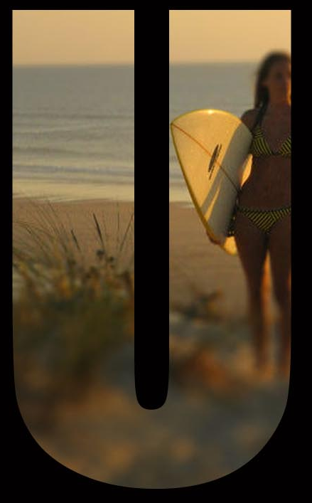

BARTH
jibé
Loopeur Pro
Né le 28/02/1990
Etudiant
0668570001
barth.jib@gmail.com

Boucle n2: Basse Style pop avec un sond assez rond. Memes accords qu'au piano
Boucle n4: Clavier Electronique Pour accentuer la légeretée, sur tous les temps en suivant les accords

Boucle n5: Flute Sur la quatrieme noire de chaque mesure pour faire la transition entre les accords
Boucle n5: Flute Sur la quatrieme noire de chaque mesure pour faire la transition entre les accords